基于ggpubr包为ggplot添加p值和显著性标记
王诗翔 · 2018-05-19
这篇文章我们将讲述
- 如何简单比较两组或多组的平均值
- 如何自动化为ggplot添加p值和显著性标记，包括箱线图、点图、条形图、线图等等
准备
安装和导入所需要的R包
需要R包ggpubr，版本>0.1.3，该包提供了基于ggplot2包的论文发表级绘图。
- 从CRAN安装：
install.packages("ggpubr")- 或者从
GitHub上下载最新的开发版本：
if(!require(devtools)) install.packages("devtools")
devtools::install_github("kassambara/ggpubr")- 载入
ggpubr：
library(ggpubr)
#> Loading required package: ggplot2
ggpubr的官方文档在http://www.sthda.com/english/rpkgs/ggpubr ## 样例数据集
数据：ToothGrowth数据集
data("ToothGrowth")
head(ToothGrowth)
#> len supp dose
#> 1 4.2 VC 0.5
#> 2 11.5 VC 0.5
#> 3 7.3 VC 0.5
#> 4 5.8 VC 0.5
#> 5 6.4 VC 0.5
#> 6 10.0 VC 0.5比较均值的方法
http://www.sthda.com/english/wiki/comparing-means-in-r包含了均值方法比较的详细描述，这里我们汇总常见的均值比较方法：
| 方法 | R 函数 | 描述 |
|---|---|---|
| T检验 | t.test() | 比较两组 (参数) |
| Wilcoxon检验 | wilcox.test() | 比较两组 (非参数) |
| ANOVA | aov() or anova() | 比较多组 (参数) |
| Kruskal-Wallis | kruskal.test() | 比较多组 (非参数) |
添加p值的函数
这里我们展示ggpubr包中可以使用的用于添加p值的R函数：
compare_means()stat_compare_means()
compare_mean()
下一部分我们将实际学习使用，这里先具体介绍一下这个函数：
compare_means(formula, data, method="wilcox.test", paired=FALSE,
group.by=NULL, ref.group = NULL, ...)
- formula:
x~group形式的公式，x是一个数值向量，group是有1个或者多个组别的因子。比如formula = TP53 ~ cancer_group。也可以使用多个响应变量，比如formula = c(TP53, PTEN) ~ cancer_group。- data: 包含变量的数据框
- method: 检验的类型。默认是
wilcox.test。允许的值包括：
t.test和wilcox.test。anova和kruskal.test。- paired: 逻辑值，是否执行配对检验。仅能用于
t.test和wilcox.test。- group.by: 在执行检验前对数据集进行分组的变量。指定后，会根据该变量分不同子集进行检验。
- ref.group: 一个字符串，指定参考组。指定后，对于一个给定分组变量，每个分组水平都会和参考组进行比较。
ref.group可以使用.all，这会对所有组别基于一个全局的均值进行两两比较。 ## stat_compare_means()
这个函数扩展了ggplot2，可以对指定ggplot图形添加均值比较的p值。
简单形式如下：
stat_compare_means(mapping = NULL,
comparisons = NULL,
hide.ns = FALSE,
label = NULL,
label.x = NULL,
label.y = NULL)
- mapping: 由
aes()创建的映射集合- comparisons: 一个长度为2的向量列表。向量中元素都是x轴的两个名字或者2个对于感兴趣，要进行比较的整数索引
- hide.ns: 逻辑值，如果
TRUE，隐藏不显著标记ns- label: 指定标签类型的字符串。允许值包括
p.signif（显示显著性水平），p.format（显示p值）- label.x, label.y: 数值。用于摆放标签位置的坐标，如果太短，会循环重复。
- …: 其他传入
compare_means()的参数，例如method,paired,ref.group比较两个独立组别
执行检验：
compare_means(len ~ supp, data = ToothGrowth)
#> # A tibble: 1 x 8
#> .y. group1 group2 p p.adj p.format p.signif method
#> <chr> <chr> <chr> <dbl> <dbl> <chr> <chr> <chr>
#> 1 len OJ VC 0.0645 0.064 0.064 ns Wilcoxon默认执行
method="wilcox.test"，你可以指定method = "t.test"进行t检验。 返回一个包含下面列的数据框：
- .y: 用于检验的y变量
- p: p值
- p.adj: 矫正p值，默认矫正方法
p.adjust.method="holm" - p.format: 格式化p值
- p.signif: 显著性水平
- 方法： 用于比较组别的统计检验
创建一个带p值的箱线图：
p <- ggboxplot(ToothGrowth, x="supp",
y = "len", color = "supp",
palette = "jco", add = "jitter")
# 添加p值
p + stat_compare_means()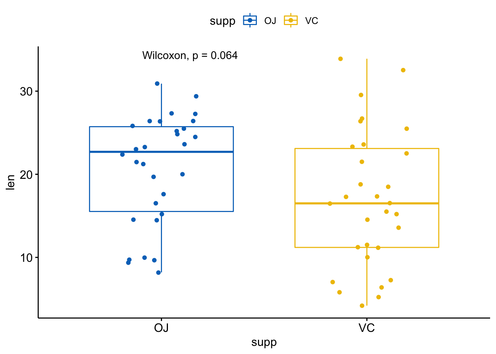
# 改变方法
p + stat_compare_means(method = "t.test")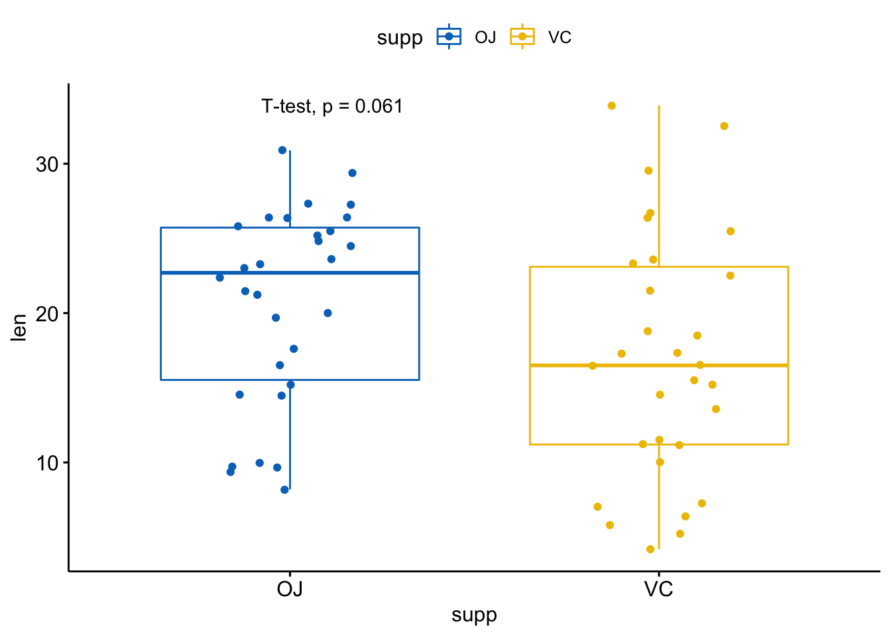
注意，p值标签位置可以使用label.x, label.y, hjust, vjust参数进行矫正。
默认p值标签显示是将compare_means()返回数据框的method和p列粘连到一起。你可以使用aes()函数进行组合。
比如，
aes(label = ..p.format..)或者aes(label = paste0("p = ", ..p.format..)): 显示p值但不显示方法aes(label = ..p.signif..): 仅显示显著性水平aes(label = paste0(..method.., "\n", "p =", ..p.format..))使用在方法和p值中插入换行符
实际操作看看：
p + stat_compare_means(aes(label = ..p.signif..),
label.x = 1.5,
label.y = 40)也可以使用字符串指定标签：
p + stat_compare_means(label = "p.signif", label.x = 1.5, label.y = 40)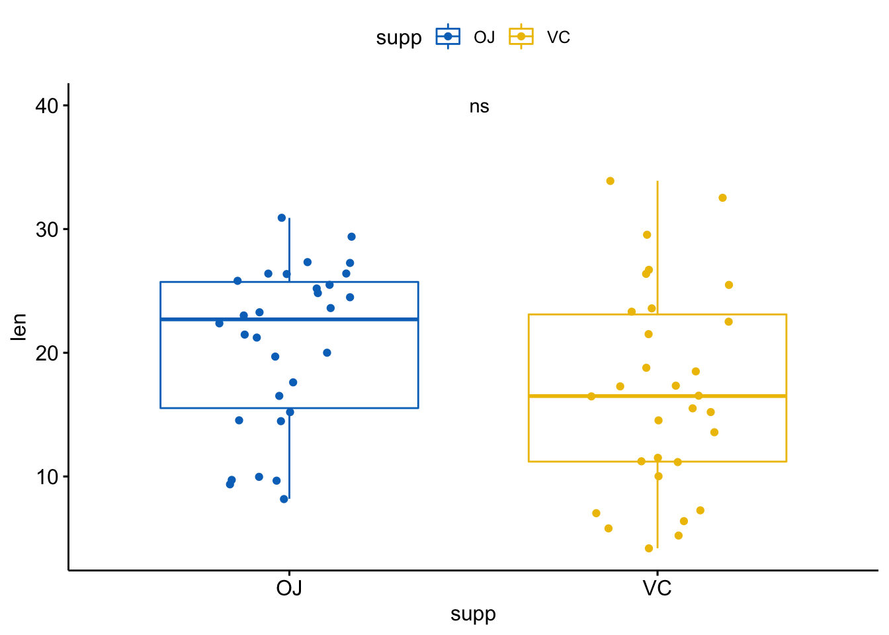
比较两组配对样本
执行检验：
compare_means(len ~ supp, data = ToothGrowth,
paired = TRUE)
#> # A tibble: 1 x 8
#> .y. group1 group2 p p.adj p.format p.signif method
#> <chr> <chr> <chr> <dbl> <dbl> <chr> <chr> <chr>
#> 1 len OJ VC 0.00431 0.0043 0.0043 ** Wilcoxon使用ggpaired()函数可视化：
ggpaired(ToothGrowth, x="supp", y="len",
color="supp", line.color="gray",
line.size=0.4, palette = "jco") +
stat_compare_means(paired = TRUE)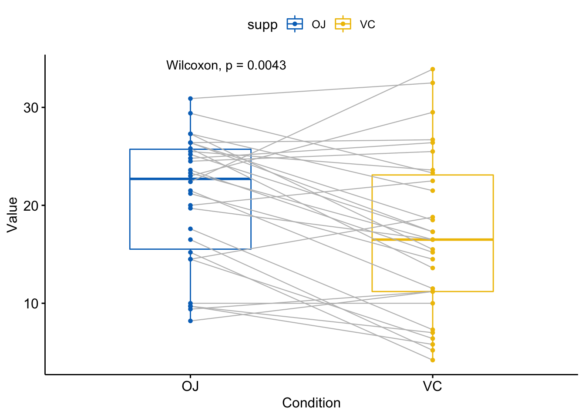
比较多组样本
- 全局检验
compare_means(len ~ dose, data = ToothGrowth,
method = "anova")
#> # A tibble: 1 x 6
#> .y. p p.adj p.format p.signif method
#> <chr> <dbl> <dbl> <chr> <chr> <chr>
#> 1 len 9.53e-16 9.50e-16 9.5e-16 **** Anova用全局p值画图：
# 默认方法为 method = "kruskal.test"
ggboxplot(ToothGrowth, x = "dose", y = "len",
color = "dose", palette = "jco") +
stat_compare_means()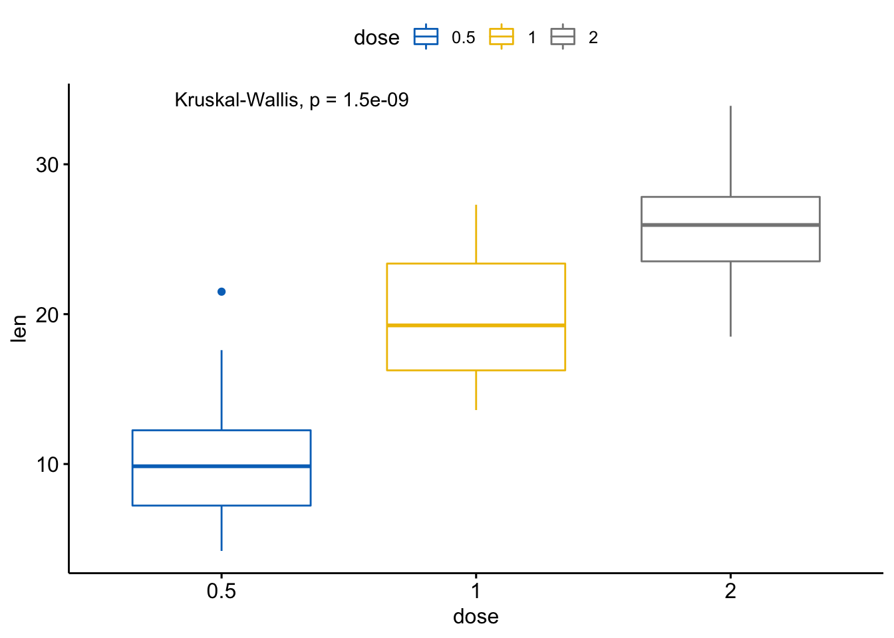
# 将方法改为anova
ggboxplot(ToothGrowth, x = "dose", y = "len",
color = "dose", palette = "jco") +
stat_compare_means(method = "anova")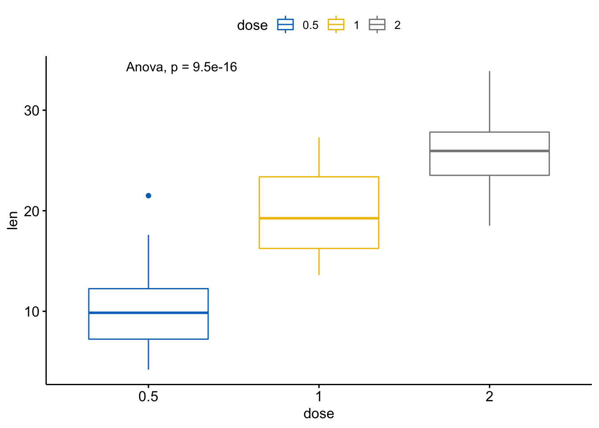
- 成对比较，如果分组变量包含超过两个水平，配对检验会自动执行。
# 执行成对比较
compare_means(len ~ dose, data = ToothGrowth)
#> # A tibble: 3 x 8
#> .y. group1 group2 p p.adj p.format p.signif method
#> <chr> <chr> <chr> <dbl> <dbl> <chr> <chr> <chr>
#> 1 len 0.5 1 0.00000702 0.000014 7.0e-06 **** Wilcoxon
#> 2 len 0.5 2 0.0000000841 0.00000025 8.4e-08 **** Wilcoxon
#> 3 len 1 2 0.000177 0.00018 0.00018 *** Wilcoxon# 可视化： 指定你想要比较的组别
my_comparisons <- list(c("0.5","1"), c("1", "2"),
c("0.5", "2"))
ggboxplot(ToothGrowth, x="dose", y="len",
color="dose", palette = "jco") +
stat_compare_means(comparisons = my_comparisons) + #添加成对p值
stat_compare_means(label.y = 50) # 添加全局p值
#> Warning in wilcox.test.default(c(4.2, 11.5, 7.3, 5.8, 6.4, 10, 11.2, 11.2, :
#> cannot compute exact p-value with ties
#> Warning in wilcox.test.default(c(4.2, 11.5, 7.3, 5.8, 6.4, 10, 11.2, 11.2, :
#> cannot compute exact p-value with ties
#> Warning in wilcox.test.default(c(16.5, 16.5, 15.2, 17.3, 22.5, 17.3, 13.6, :
#> cannot compute exact p-value with ties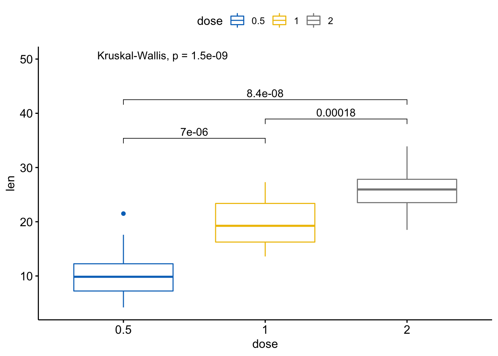
如果你想要指定精确的y轴位置，使用label.y参数：
ggboxplot(ToothGrowth, x="dose", y="len",
color="dose", palette = "jco") +
stat_compare_means(comparisons = my_comparisons,
label.y=c(29, 35, 40)) +
stat_compare_means(label.y = 45)
#> Warning in wilcox.test.default(c(4.2, 11.5, 7.3, 5.8, 6.4, 10, 11.2, 11.2, :
#> cannot compute exact p-value with ties
#> Warning in wilcox.test.default(c(4.2, 11.5, 7.3, 5.8, 6.4, 10, 11.2, 11.2, :
#> cannot compute exact p-value with ties
#> Warning in wilcox.test.default(c(16.5, 16.5, 15.2, 17.3, 22.5, 17.3, 13.6, :
#> cannot compute exact p-value with ties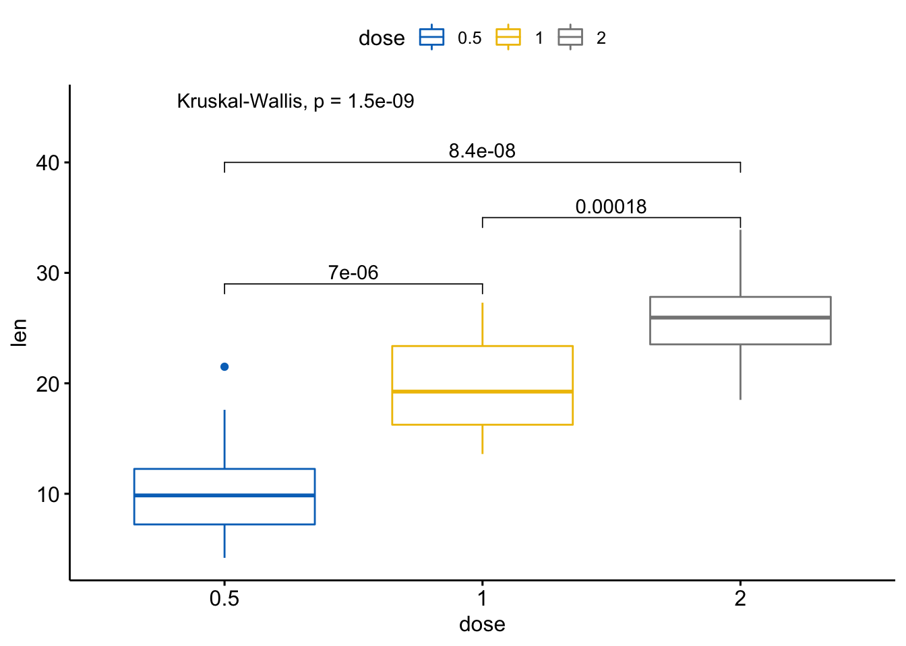
- 基于参考组的多重成对比较
# 基于参考组
compare_means(len ~ dose, data = ToothGrowth,
ref.group = "0.5",
method = "t.test")
#> # A tibble: 2 x 8
#> .y. group1 group2 p p.adj p.format p.signif method
#> <chr> <chr> <chr> <dbl> <dbl> <chr> <chr> <chr>
#> 1 len 0.5 1 1.27e- 7 1.30e- 7 1.3e-07 **** T-test
#> 2 len 0.5 2 4.40e-14 8.80e-14 4.4e-14 **** T-test# 可视化
ggboxplot(ToothGrowth, x="dose", y="len",
color="dose", palette = "jco") +
stat_compare_means(method="anova", label.y=40) +
stat_compare_means(label="p.signif", method="t.test",
ref.group = "0.5")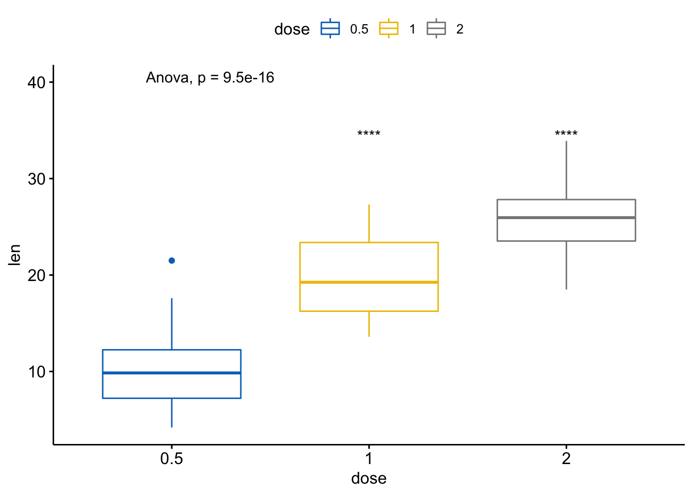
- 以所有值为基准(base-mean)进行多个成对比较
如果出现很多组别，两两比较过于复杂，通过将所有数据汇总创建一个虚拟的样本，以它为基准进行比较。
# Comparison of each group against base-mean
compare_means(len ~ dose, data = ToothGrowth, ref.group = ".all.",
method = "t.test")
#> # A tibble: 3 x 8
#> .y. group1 group2 p p.adj p.format p.signif method
#> <chr> <chr> <chr> <dbl> <dbl> <chr> <chr> <chr>
#> 1 len .all. 0.5 0.000000290 0.00000087 2.9e-07 **** T-test
#> 2 len .all. 1 0.512 0.51 0.51 ns T-test
#> 3 len .all. 2 0.000000425 0.00000087 4.3e-07 **** T-test可视化
ggboxplot(ToothGrowth, x = "dose", y = "len",
color = "dose", palette = "jco")+
stat_compare_means(method = "anova", label.y = 40)+ # Add global p-value
stat_compare_means(label = "p.signif", method = "t.test",
ref.group = ".all.") # Pairwise comparison against all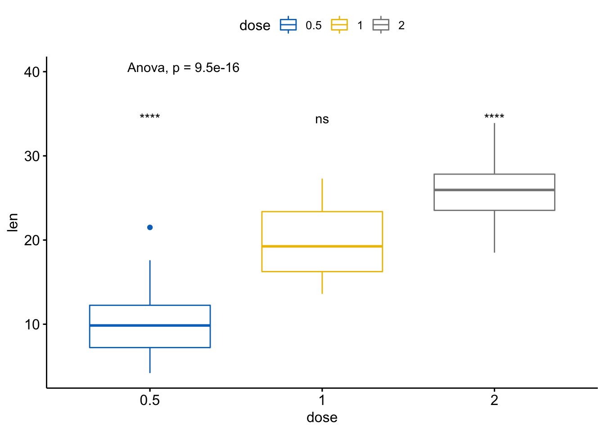
这个方法有时候会非常有用，比如下面这个例子中，我们可以通过每个样本均值与所有样本的均值进行比较，判断基因水平是过表达还是下调了。
# Load myeloma data from GitHub
myeloma <- read.delim("https://raw.githubusercontent.com/kassambara/data/master/myeloma.txt")
# 执行检验
compare_means(DEPDC1 ~ molecular_group, data = myeloma,
ref.group = ".all.", method = "t.test")
#> # A tibble: 7 x 8
#> .y. group1 group2 p p.adj p.format p.signif method
#> <chr> <chr> <chr> <dbl> <dbl> <chr> <chr> <chr>
#> 1 DEPDC1 .all. Cyclin D-1 0.288 1.00e+0 0.29 ns T-test
#> 2 DEPDC1 .all. Cyclin D-2 0.424 1.00e+0 0.42 ns T-test
#> 3 DEPDC1 .all. MMSET 0.578 1.00e+0 0.58 ns T-test
#> 4 DEPDC1 .all. MAF 0.254 1.00e+0 0.25 ns T-test
#> 5 DEPDC1 .all. Hyperdiploid 0.0000000273 1.90e-7 2.7e-08 **** T-test
#> 6 DEPDC1 .all. Proliferation 0.0000239 1.20e-4 2.4e-05 **** T-test
#> 7 DEPDC1 .all. Low bone disease 0.00000526 3.20e-5 5.3e-06 **** T-test可视化表达谱
ggboxplot(myeloma, x="molecular_group", y="DEPDC1",
color="molecular_group", add="jitter",
legend="none") +
rotate_x_text(angle = 45) +
geom_hline(yintercept = mean(myeloma$DEPDC1),
linetype=2) + # 添加base mean的水平线
stat_compare_means(method = "anova", label.y = 1600)+ # Add global annova p-value
stat_compare_means(label = "p.signif", method = "t.test",
ref.group = ".all.") # Pairwise comparison against all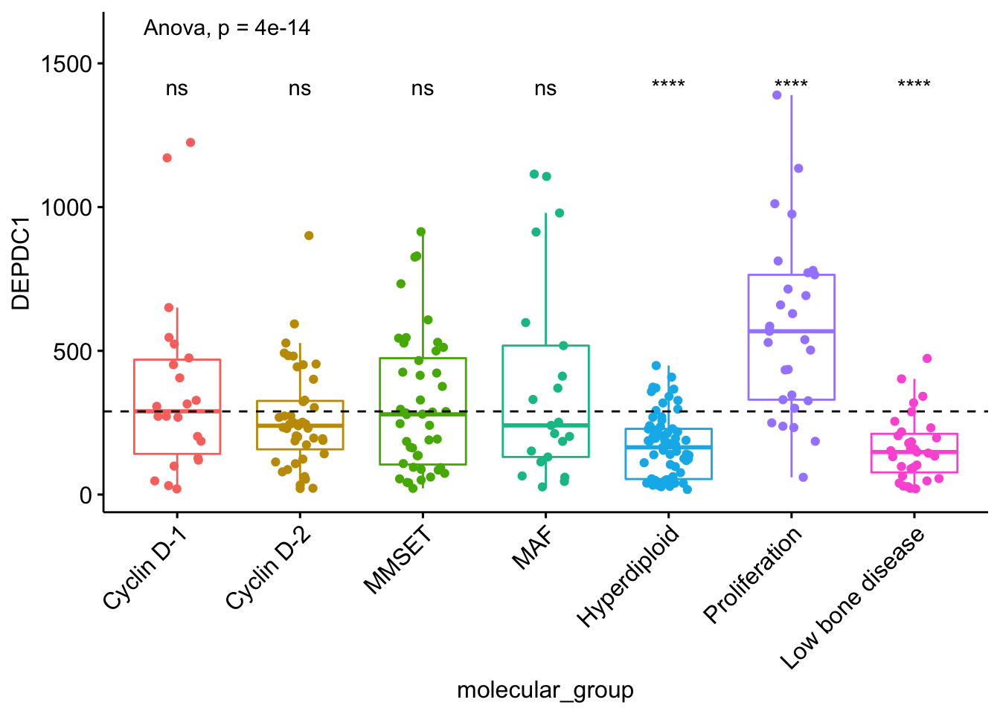
多个分组变量
- 根据某个变量分组后两个独立样本的比较
执行检验：
compare_means(len ~ supp, data = ToothGrowth,
group.by = "dose")
#> # A tibble: 3 x 9
#> dose .y. group1 group2 p p.adj p.format p.signif method
#> <dbl> <chr> <chr> <chr> <dbl> <dbl> <chr> <chr> <chr>
#> 1 0.5 len OJ VC 0.0232 0.046 0.023 * Wilcoxon
#> 2 1 len OJ VC 0.00403 0.012 0.004 ** Wilcoxon
#> 3 2 len OJ VC 1 1 1.000 ns Wilcoxon因为生成了不同的子图，根据变量分面
# 根据 "dose" 变量分面绘制箱线图
p <- ggboxplot(ToothGrowth, x = "supp", y = "len",
color = "supp", palette = "jco",
add = "jitter",
facet.by = "dose", short.panel.labs = FALSE)
# Use only p.format as label. Remove method name.
p + stat_compare_means(label = "p.format")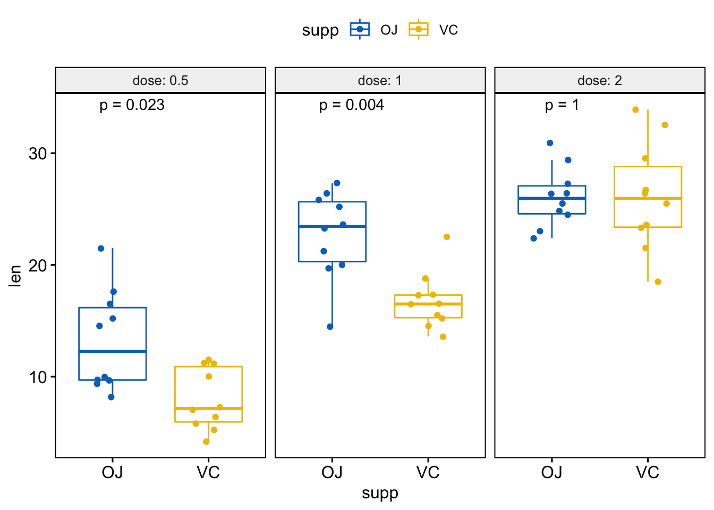
# Or use significance symbol as label
p + stat_compare_means(label = "p.signif", label.x = 1.5)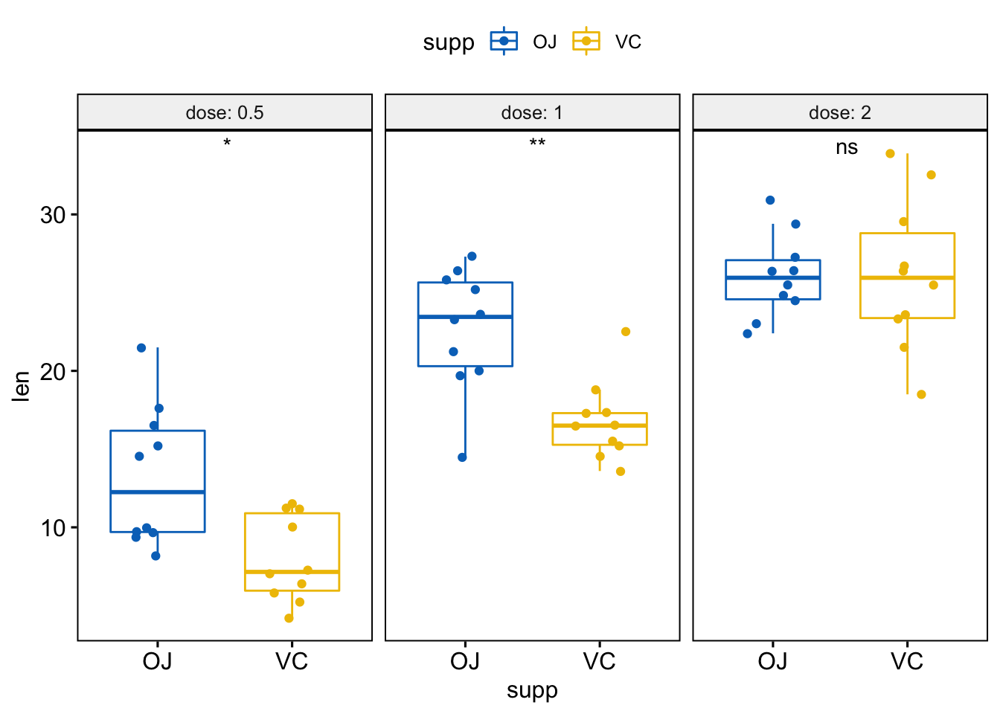
将这几个图绘制在单个面板内：
p <- ggboxplot(ToothGrowth, x = "dose", y = "len",
color = "supp", palette = "jco",
add = "jitter")
p + stat_compare_means(aes(group = supp))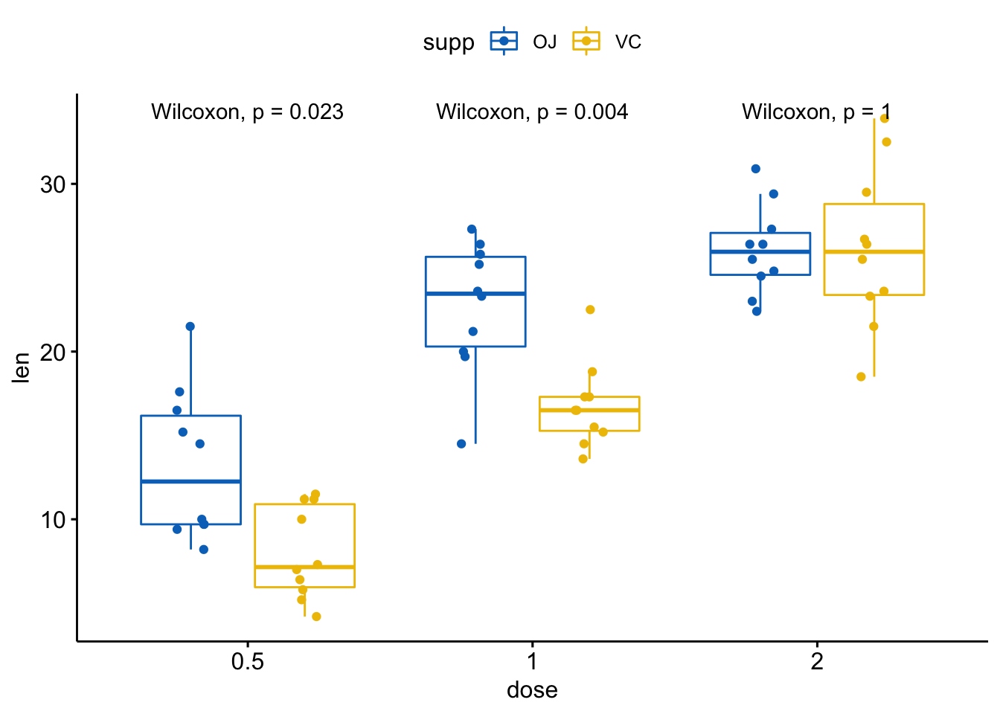
# 仅显示p值
p + stat_compare_means(aes(group = supp), label = "p.format")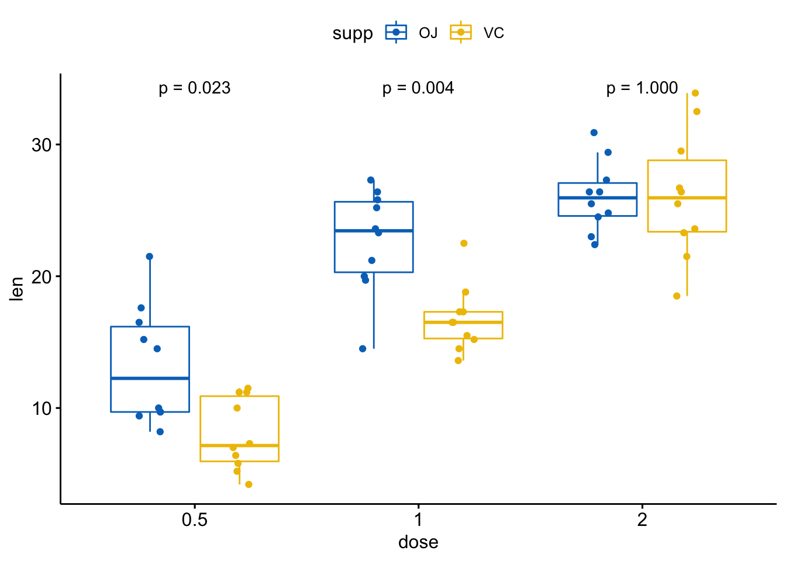
# 使用显著性标记
p + stat_compare_means(aes(group = supp), label = "p.signif")
- 分组后配对样本比较
compare_means(len ~ supp, data = ToothGrowth,
group.by = "dose", paired = TRUE)
#> # A tibble: 3 x 9
#> dose .y. group1 group2 p p.adj p.format p.signif method
#> <dbl> <chr> <chr> <chr> <dbl> <dbl> <chr> <chr> <chr>
#> 1 0.5 len OJ VC 0.0330 0.066 0.033 * Wilcoxon
#> 2 1 len OJ VC 0.0137 0.041 0.014 * Wilcoxon
#> 3 2 len OJ VC 1 1 1.000 ns Wilcoxon可视化，按分组变量dose分面创建一个多面板箱线图：
p <- ggpaired(ToothGrowth, x="supp", y="len",
color="supp", palette = "jco",
line.color = "grey", line.size =0.4,
facet.by = "dose", short.panel.labs = FALSE)
# Use only p.format as label. Remove method name.
p + stat_compare_means(label = "p.format", paired = TRUE)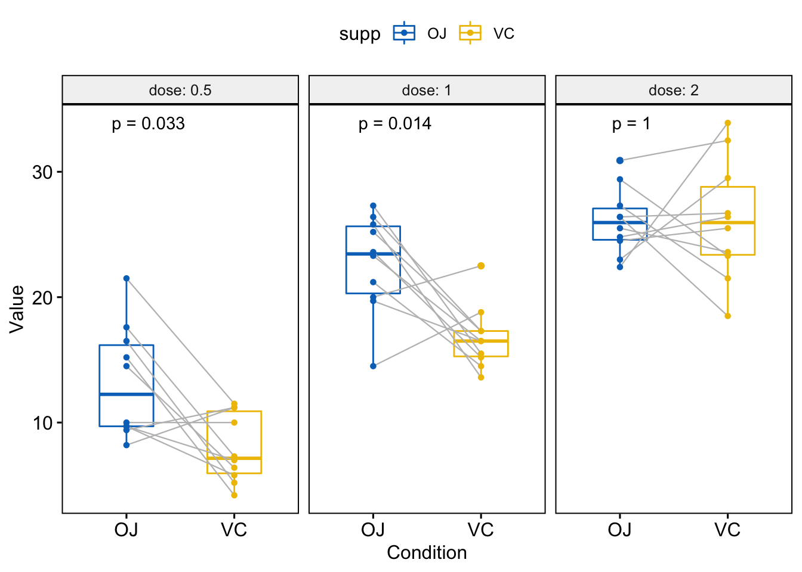
其他图形
- 条形图和线图（一组变量）
# 条形图加均值标准误
ggbarplot(ToothGrowth, x = "dose", y = "len", add = "mean_se")+
stat_compare_means() + # Global p-value
stat_compare_means(ref.group = "0.5", label = "p.signif",
label.y = c(22, 29)) # compare to ref.group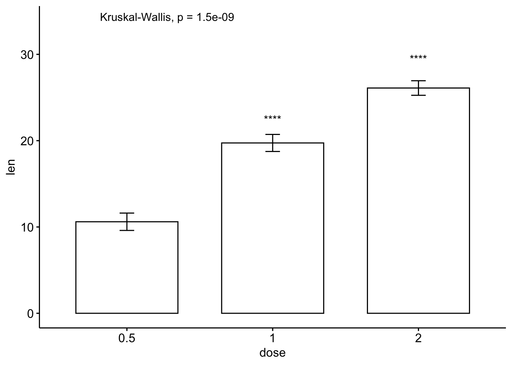
# 线图加均值标准误
ggline(ToothGrowth, x = "dose", y = "len", add = "mean_se")+
stat_compare_means() + # Global p-value
stat_compare_means(ref.group = "0.5", label = "p.signif",
label.y = c(22, 29)) 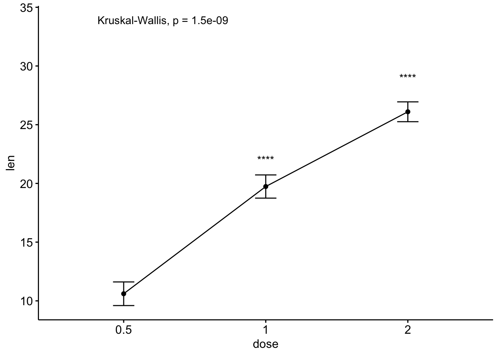
- 条形图和线图（两组变量）
ggbarplot(ToothGrowth, x = "dose", y = "len", add = "mean_se",
color = "supp", palette = "jco",
position = position_dodge(0.8))+
stat_compare_means(aes(group = supp), label = "p.signif", label.y = 29)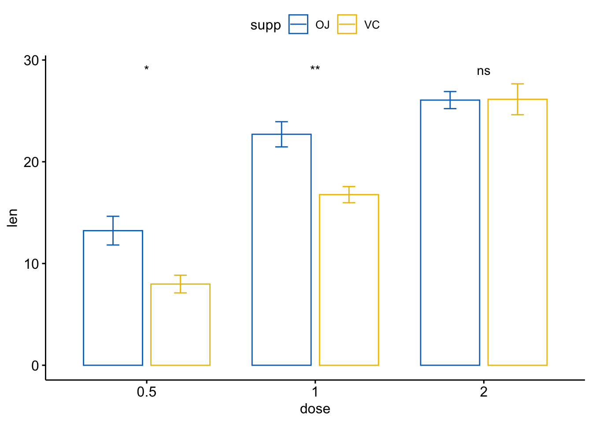
ggline(ToothGrowth, x = "dose", y = "len", add = "mean_se",
color = "supp", palette = "jco")+
stat_compare_means(aes(group = supp), label = "p.signif",
label.y = c(16, 25, 29))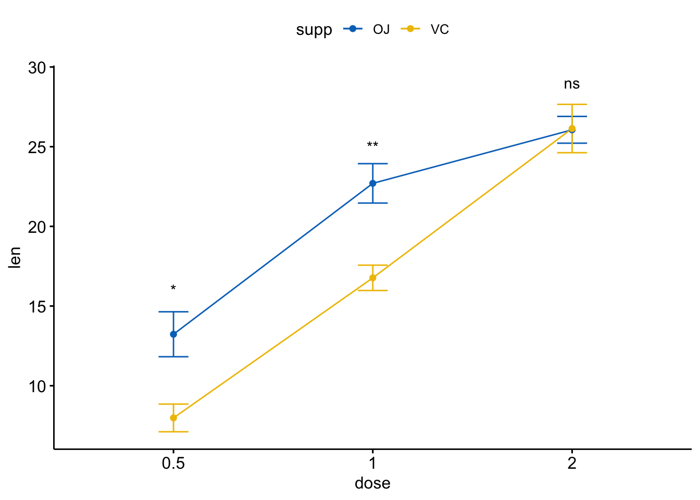